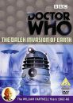

Эра Первого Доктора (2 сезон)
<<< НАЗАД ||| 2. Вторжение далеков на Землю ||| ДАЛЬШЕ >>>
Субтитры: Русские и Английские |  |
|---|---|
+ Версия с обновленными спецэффектами (эпизоды 1, 3, 4) 2003 Субтитры: Русские и Английские | |
21 ноября - 26 декабря 1964
6 эпизодов по 25 мин.
| 1. Конец света 2. Далеки 3. День расплаты 4. Конец завтрашнего дня 5. Пробужденный союзник 6. Точка воспламенения | Сохранились 16mm t/r * для 1, 3 и 4 эпизодов имеется версия с обновленными спецэффектами |
|---|
 |  |  |
«Вторжение далеков на Землю» показывает опустошённую планету под властью далеков — они перекраивают мир и подчиняют людей. Доктор и команда встают на сторону сопротивления, бросая вызов тотальному контролю. Ключевая интрига — план далеков по изменению самой структуры Земли. Серия закрепляет далеков как угрозу вселенского масштаба и усиливает мотив борьбы за свободу.
 VHS - май 1990 |  DVD - 9 июня 2003 |  Blu-ray - 5 декабря 2022 * Версия в нашей группе |
|---|